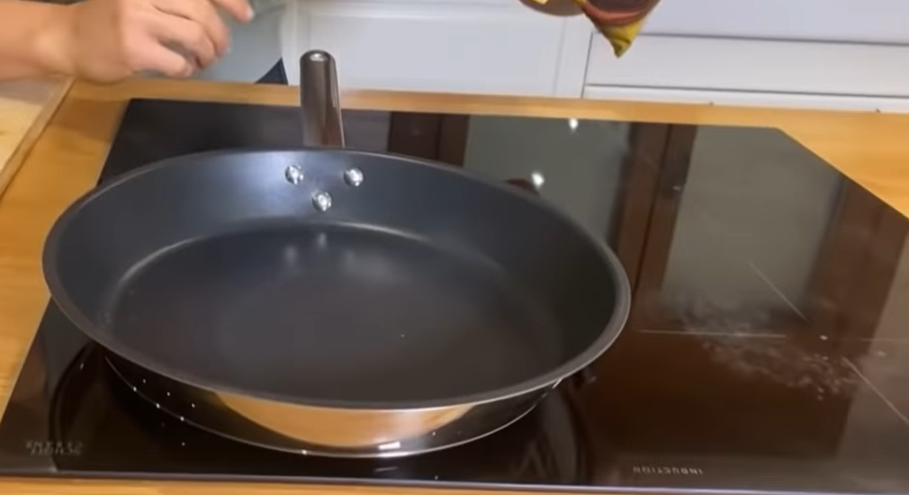
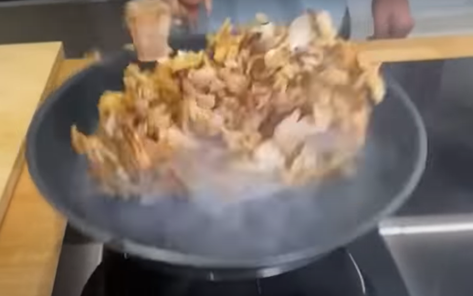
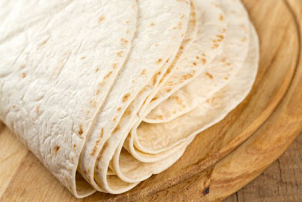
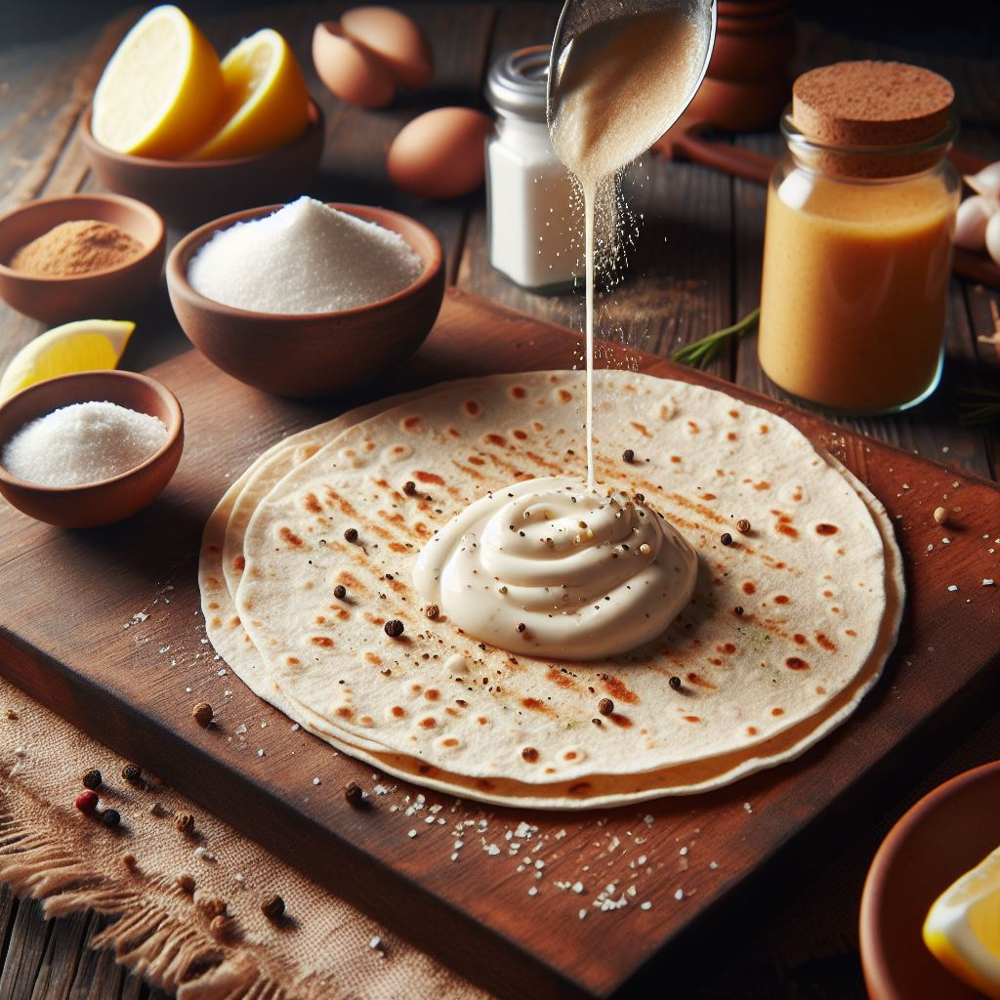
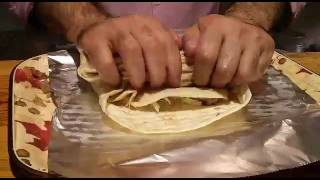

Durum
Prparación
Para preparar un durum desde casa (3 piezas):
Volver al inicio
Ir a la lista de ingredientes
Ir al precio
Ir al video
- Encender el fuego.

- Cortar la bolsa de carne de kebab.
- Hechar el contenido de la bolsa en una sartén sin aceite.

- Cocinar durante 6 minutos a fuego medio aproximadamente moviendo de tanto en tanto el contenido.
- Apagar el fuego.
- Abir el paquete de tortillas.

- Sacar tres tortillas
- Calentar las tortillas en el sartén con el calor residual.
- Verter un poco de salsa de yogurt (Opcional)

- Hechar un tercio de la carne sobre la tortilla formando una hilera un poco descentrada.
- Doblar la tortilla hacia dentro en los extremos de la hilera de carne.
- Sobreponer la lengueta de la tortilla más corta a la carne.
- Empezar a enrollar la carne envuelta procurando que no se salga el relleno.
v
- Repetir los últimos 5 pasos. (x2)
- Servir los tres durums en un plato.
- ¡¡Disfrutar!!